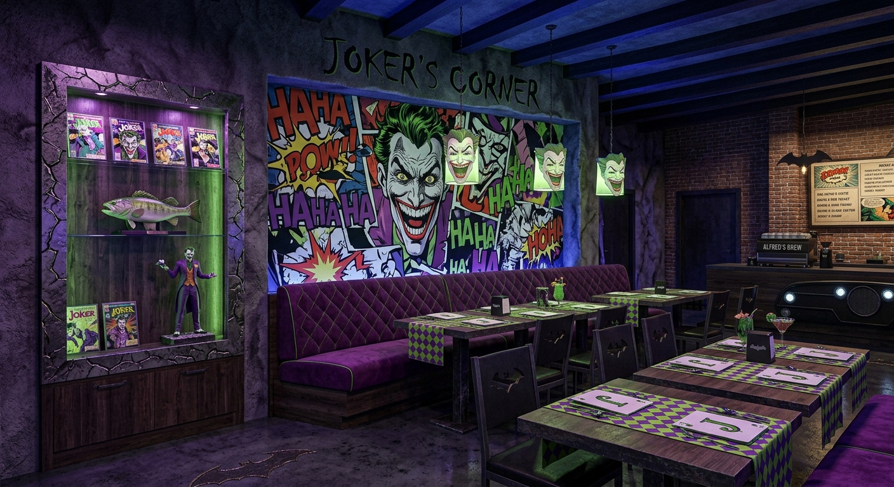
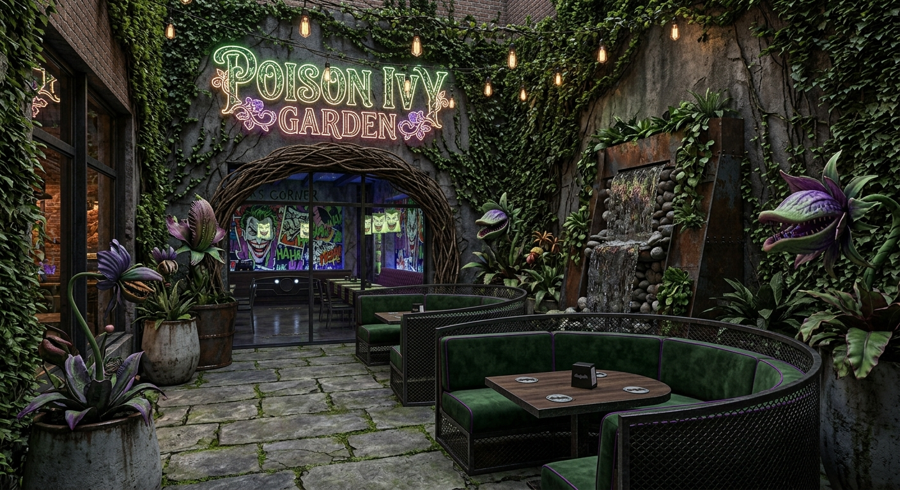
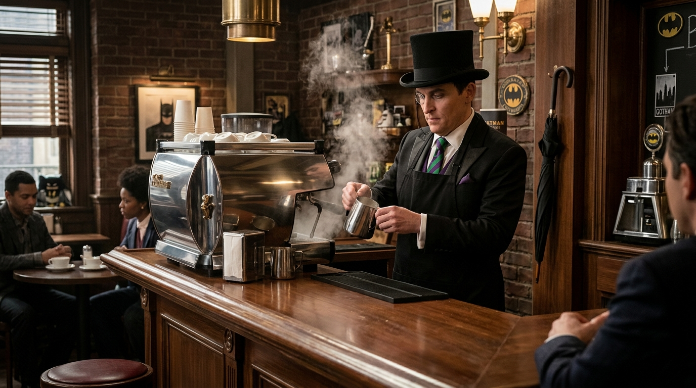

Nuestros salones tematicos
Salon Joker's Corner
Caos, color y diversion
Un espacio lleno de energia, luces de neon y colores purpuras. Diseñado para disfrutar de una merienda vibrante rodeado de referencias al villano de Gotham

Poison Ivy Garden
Un oasis verde al aire libre
Nuestro patio exterior rodeado de vegetacion exuberante, flores exoticas y una iluminacion tenue ideal para tardes de cafe tranquilo y relajacion.

Cobblepot Lounge
Elegancia clasica y atencion de primera
Un salon exclusivo inspirado en Oswald Cobblepot. Cuenta con sillones de cuero, detalles de madera oscura y una atencion de etiqueta inolvidable.
